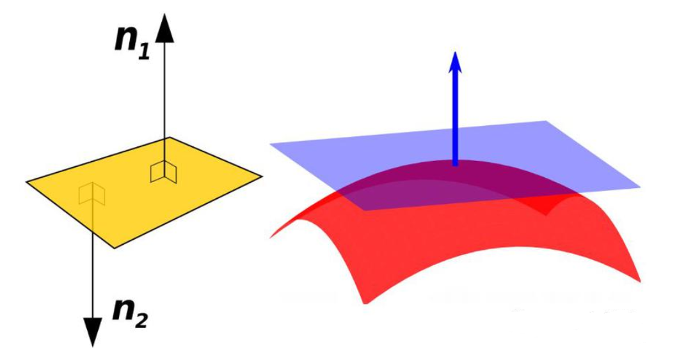
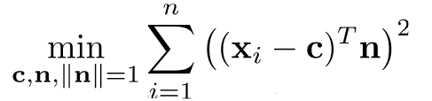
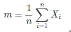
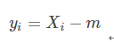
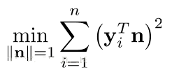
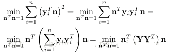
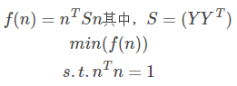
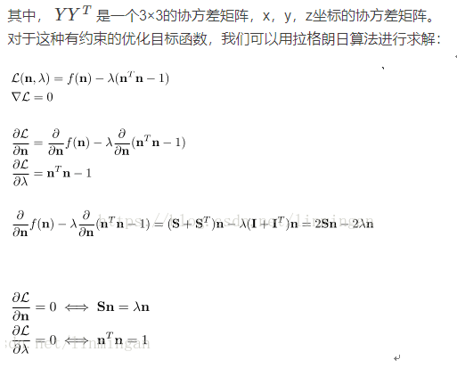
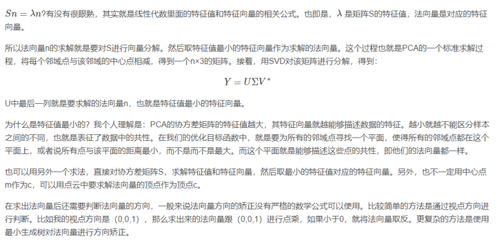

点云法向量估计

点云法向量的估计（注意是估计，不是精确计算，事实上点云是对曲面的点采样，没有什么是可以精确计算的）在很多场景都会用到， 比如ICP配准，以及曲面重建。点云的法线计算大致有两种方法：
1、使用曲面重建方法，从点云数据中得到采样点对应的曲面，然后再用曲面模型计算其表面的法线。
2、直接使用近似值直接从点云数据集推断出曲面法线。
这里主要是讲解第二种方法，也即PCA主成分分析点云法向量估计：
基本思想：选取点云中每一点，对其进行临近点的搜索，将包含该点的临近点拟合成曲面，对曲面中的点进行PCA主成分分析， 查找特征值最小的对应的特征向量，该特征向量即为该拟合曲面的法向量。 基于PCA的点云法向量估计，其实是从最小二乘法推导出来的。假设我们要估计某一点的法向量，我们需要通过利用该点的近邻点估计出一个平面， 然后我们就能计算出该点的法向量。或者可以这么说，通过最小化一个目标函数（要求的参数为法向量）， 使得该点与其每个近邻点所构成的向量与法向量的点乘为0，也就是垂直：

正常情况下，我们可以将点c看成是某一领域中所有点的中心点：

同时，

这样，优化目标函数变为：

我们进一步对目标函数进行推导：

上面的优化目标函数等于：


